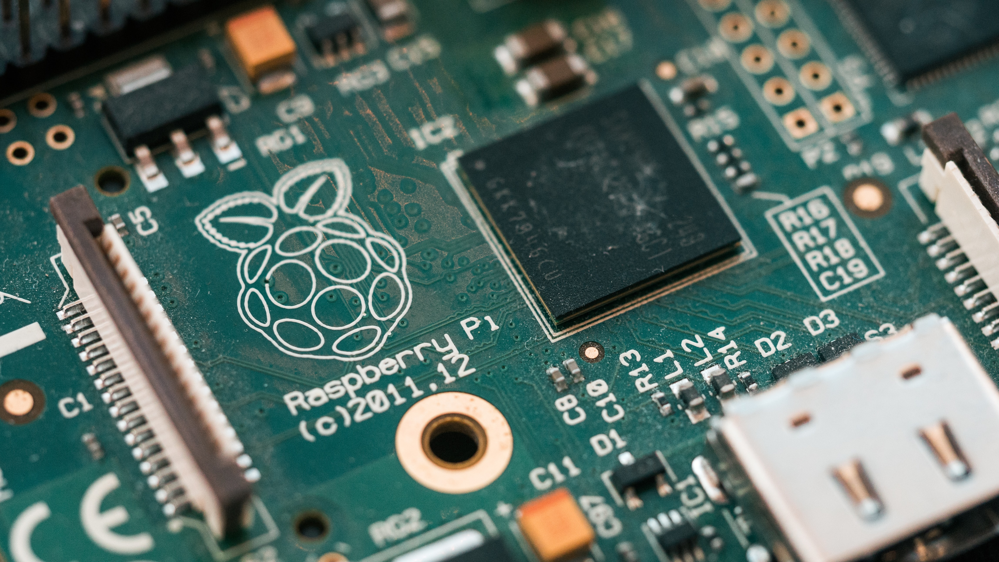

Project Description
With Easy Perf Check your users can run network diagnostics from the comfort of their home with the click of a button. The results are sent to you and you can provide adequate support.
Clouds, Services, Servers
Cloud computing is a relatively new technology which has dramatically influenced the adoption of technology in businesses. There are 3 main types of cloud services. Public, Private and Hybrid.
Public clouds are those which are available to anyone. A business buys an instance or instances of virtual computing space or storage space, which are hosted on computers somewhere in the world. You are unlikely to ever know where the computers are, who has access to the data, or even what sort of hardware is behind the service. The main players in this market are Microsoft with their Azure platform, Amazon with the AWS platform, and Google also now have a similar offering Google Cloud.
In the simplest terms, a Cloud platform is a computer which you can use, but you don’t own, and is not located at your own premises.
A private cloud is a little different. While the services you are accessing are still not located at your business premises, but likely located in a specialised data centre, they belong to you. You are responsible for the cost of hardware, software and maintenance and upgrades. You likely pay a fee for an amount of rack space you are using and have an allowance for data and power usage. Included in the fee is the facility, security, air conditioning and other environmental factors such as fire detection and suppression.
A Hybrid solution can be either a combination of public and private, or on-premises and public or private. An example might be, having your servers and data onsite, but using a public cloud as a backup repository, and using a public cloud for a development environment. Or you may use an on-premises solution for your core infrastructure, while replicating data to a private datacentre environment for use as a disaster recovery environment.
Utilizing public cloud storage is very popular for backup storage. Both Azure Blobs and AWS S3 or Glacier are popular choices, as putting data in is free – you only pay for the space you consume, and storage is reliable with a high availability. Public cloud storage is an ideal option for businesses who seek long term reliable storage that is cost efficient.
One of the main benefits to a business of using a cloud environment is simply the scalability. If you need a new or additional server, you can run a new virtual server up in PowerShell using Microsoft Azure in a few minutes. No hardware expenditure involved. You only pay for the time that your server is on and running. So, it is extremely flexible for application and database development which may need a lot of resources but might only be used for a few hours per day. This way, you only need to pay for the time that the server is running. Shut it down when finished, and the charging stops.
The availability and easy accessibility of cloud services has also led to an abundance of new services. Some of the very first of these were Microsoft’s Fleet of Office365 products. Where, you no longer need to buy a server, software and licensing to have your own Microsoft Exchange server. Now a business can gain all the functionality of Microsoft Exchange, for a small monthly cost per user. This is also flexible. Instead of needing to buy your Exchange licenses in bundles of 10, 25, 50 or 100. You can add as many as you like, or as few as you like at a time. You can also flexibly use add and remove licenses at a time. You can bundle the mail license with an office license, giving each user account the latest full Microsoft Office suite products, as well as OneDrive storage, MS Teams, and other collaboration products. These initial services have led to other services, such as SaaS, where you can pay a software vendor for a cloud instance of their software. No need to run a physical or virtual server on-premises, or even a cloud server, you simply pay to use the software as you go. The software vendor is responsible for the entire hardware and software platform. You just use the software.
One of the newest iterations of the cloud computing environment, is DaaS. Desktop as a Service, where you can gain access to a virtual desktop computer, with all your organization’s software installed. This is ideal for people working from home and is popular in large educational institutions where a thin client is used to access a virtual desktop for students. The desktop computer follows the student around to their classes or any other device they access it from.
These services also have a large benefit for the vendor of the product. Their costs for updates are greatly reduced. They no longer have to produce CD/DVD media to distribute updates, or new license keys for new versions. They can simply update a central server, and all users of the software will then be using the latest version of the software. Managing licenses and income is much easier for the vendor also. Licenses are often linked to your business e-mail addresses, making software piracy and sharing of license keys almost impossible.
This is not having a detrimental impact on jobs in the industry, but rather an increase in jobs. The types of jobs maybe slightly different, but it is still a growth industry. There has been a huge growth in datacentre installations Australia wide, and globally. These environments still need support. However, the support roles have often shifted from the business premises, to the datacentre itself.
The main impact this has had on IT professionals, is a need to upskill. To understand how to utilize and manage cloud platforms, how to offer customers an option to take up and utilize the benefits offered by cloud computing. There is new terminology, new skills, and especially new attack surfaces to consider
One of the main benefits to end users has been seen over the interesting times with Covid 19 restrictions. So many industries have been able to continue to function successfully, with almost their entire workforces functioning in geographically different locations, yet maintaining connectivity through cloud platforms like Teams, Skype for Business, Webex, still working utilizing the same resources through SharePoint, and doing all this securely via full tunnel VPNs.
Cybersecurity
Cybersecurity is not new technology. Security in IT has been around for a long time, but with the increased number of malicious actors and the ease at which threats can be deployed, has changed the threat-scape immensely in the past 5 years.
Theories of the first virus or worm were developed by mathematicians as early as the 1940s. But the first virus that had some sort of malicious intent was not developed until 1974. This was known as the Rabbit virus. The first virus designed to impact the personal computer was in 1986 and would infect the boot sector of a 5 ¼” floppy drive. Although this virus was not malicious.
The spread or replication of malicious software, either viruses or worms, used to be slow. It depended on people sharing a floppy disk initially, and then followed with people downloading the same file from a website, or via e-mail.
In modern times, the spread of a threat is no longer slow. Cyber criminals use bots, and other methods of spreading malicious software.
Initially, a worm or a virus’ malicious intent was to crash your computer, or make it run so slow, it was impossible to use. However, with the advent of almost impossible to trace crypto currencies, ransomware is now the popular threat. Ransomware can also be used to deliver a RAT – remote access trojan – to infected machines. The impact to a business of this type of attack can be catastrophic.
The first goal of Ransomware is to make your system unusable. To trap you into needing something the cybercriminal has and you do not – an encryption key. The ransomware program searches your hard drive, and initially encrypted anything that had a certain file extension. Such as .jpg, .png, .doc, .xls and those sorts of user files.
Modern ransomware is capable of being a lot smarter. Identifying if a computer is part of a Windows domain, and then hunting the network for a file server, to encrypt the contents of a shared folder. Hunting the network for a server listening on TCP 1433 – which indicates an SQL based database is present on the network. Then, silently attacking that SQL database server hoping it has vulnerabilities that can be exploited. All this is done for the purpose of gaining a ransom. However, it is becoming increasingly prevalent, that it is not just the ransom the malicious actor is seeking, but saleable data. This is also used a leverage point, to ensure the ransom gets paid.
If data can be exfiltrated from a network, and the data can then be held to ransom outside of the organisation, the prospects of having your ransom paid is much higher. Not only for the reason of the bad publicity it may attract, but the release of certain types of data maybe very valuable.
On occasions, ransomware is used for industrial espionage purposes. One recent example of this was the defence contractor in Adelaide who was infiltrated due to a hole in the network left by an unskilled IT company, which allowed a foreign government to infiltrate the organisation undetected for over 6 months. Plans for the Royal Australian Navy’s 2 helicopter aircraft carriers were stolen, and later offered for sale as proof of theft on the dark web. These 2 ships cost the Australian Government over $3 billion dollars, and due to a simple mistake, their top-secret designs were accessed. Will this make them vulnerable in a wartime scenario, or for espionage. It is very likely.
Cyber security is generally always a reactive response. As, it can be difficult to fix vulnerabilities, until someone finds them, and often tries to exploit them.
It is certainly not possible to have a computer network which is completely impervious to all threats. However, a layered security approach, using the network as a sensor, and most importantly, user training is all needed to provide the highest levels of security. For both home and business computing.
It used to be thought that by air-gapping systems, they could be secured against breaches. However, this has been proven time and time again, that air gaps can be jumped. The most notable, and first publicly known attack that crossed an air gapped system, was Stuxnet. The likely impact of these escalations in the ease of cybersecurity breaches and attacks is to find more individuals being subjected to identify theft, and individuals being blackmailed, or personally impacted by the breaches of large organizations.
This is going to be multiplied by the number of IoT devices people are placing in their homes and businesses. These devices are generally not designed with security in mind, and people don’t give much thought to the actual security of these devices. They are just focused on the convenience and the “cool” factor. One of the more famous incidents where an IoT device was allowed into a very secure network, and then leveraged to act against the network occurred in the USA at a large Casino. The Casino employed a connected thermometer for their large aquarium in their lobby. The thermometer was able to be attacked. Due to not being designed with security in mind, but more convenience focused, the thermometer was compromised, and attackers used it to launch attacks against the network. It was never revealed exactly what data was stolen, but vast amounts of private data were stolen, and was suspected to include customer lists of high rollers and their financial details.
There is also an impact on cyber warfare. As has been recently seen in Australia, since the Australian Government has been calling for an independent investigation into Covid-19 sources, there has been a noticed increase in port scans, syn attacks, and in particular SQL injection attacks originating from large Chinese Telcos, such as China Telecom. I have personally seen a 50% increase in traffic originating from Chinese registered IP addresses. Cyber warfare can be used not only to steal data, but to cripple a country’s economy, by damaging businesses, and therefore business confidence.
This will have an impact on everyone’s daily life going forward. More and more people are using connected devices in their homes. Google Home, Amazon Alexa, and similar devices. These devices have to be listening to you all the time. They also have to be connected to a server somewhere in the world. The current average time to detect a data breach in large organizations, who have a cyber security budget is around 200 days. Then a further 60 days to remediate that breach. During that time, what sort of data could a malicious actor gain access to. Especially with the prevalence of these connected devices in homes, and so many people working from home during Covid times. How often does the CEO read his password out while he taps it into his keyboard? If an attacker could gain access to his home network through an aquarium thermometer, a garden watering system, a weather station, a baby monitor, a light bulb, what else are they going to be able to access, record, steal, listen in to?
The impact on everyone’s daily lives will continue to increase as new innovations come to market. Especially when security of the device and design is not the first requirement of the designs. Identity theft, unauthorized access to bank accounts, medical records, credit reports, will become normal.
Autonomous Vehicles
What is the state of the art of this new technology?
Autonomous vehicles have the ability to self- drive the vehicle itself without any human interference and be able to detect surrounds for traffic light and obstacles based on (Narla, Siva R K. 2013). There could be a driver sitting in the driver seat to activate autonomous mode or change back to traditional mode for the human to control the vehicle. The vehicle is able perform a variety of functions including speeding up, slowing down, stopping, turning and parking. Additionally, when a human is driving the vehicle, artificial intelligence is in built to alert any hazards or interfere by stopping the vehicle to avoid collisions. Owners are able to put settings into the car system to either drive to set designated locations or make commands for the vehicle to find parking itself.
There are also functions of vehicle-to-vehicle (V2V) infrastructure which allow each autonomous vehicle to communicate between nearby vehicles through short-range wireless data exchange. The V2V communication allow the vehicle to detect threats within a 360-degree range.
What can be done now?
Autonomous vehicles are able to drive the vehicle itself without human intervention including basic driving functions of turning, reversing and driving straight. The new technology is also able to detect traffic lights and signs to ensure it complies with driving regulations for speed limits. The V2V communication installed allows the autonomous vehicle to detect and communicate with nearby by vehicles to avoid collisions. Furthermore, autonomous vehicles are also able to detect threats and hazards within a 360-degree range for animals or pedestrians where it would be programmed to stop if there is a hazard ahead. Additionally, autonomous vehicles also have a smart parking sensor installed which enables the vehicle to scan a parking area for an available parking space and then automatically self-drive to that spot to be parked (García Oya et al., 2018). Self-driving vehicles are electric and they become charged from electric or power outlets instead of petrol.
What is likely to be able to be done soon (next 3 years)?
Autonomous vehicles have had significant impact on the way companies allocated factors of production. According to (Daily, Medasani, Behringer and Trivedi, 2017), the Chinese government will promote the adoption of autonomous vehicles by 2025 within the trucking industry mainly for wide open areas where there is minimal traffic congestion such as trucks being driven from airplane or ship to port. In response, Didi Chuxing and Geely with ownership holdings in Volvo are all currently focusing on restructuring the transportation industry to include autonomous vehicles globally.
When self-driving cars become widespread in the future, regular driving patters will be evenly distributed to reduce traffic congestions and pollution. In Europe, autonomous vehicles of Level 5 have been developed by 2020 thus the current focus in one developing the legal framework for accidents caused without a human driver. The legal framework might be completed after around 3 years.
What technological or other developments make this possible?
According to the U.S. Department of Transportation, CV technology has enabled the exchange of autonomous vehicle data for position, speed and location. RFID Reader on traffic signs has allowed autonomous vehicles to detect the reader in order to interpret the traffic signs. (Pérez et al., 2010).Vehicular senior networks (VSNs) were used to develop the self-car parking system in autonomous vehicles (Correa, Boquet, Morell and Lopez Vicario, 2017).Lidar is a radar technology that utilise light rays instead of radio waves which has allowed the development of autonomous vehicles to have the ability to self-drive without a human to steer the wheel or step on the foot pedals. The software system Autopilot which includes camera sensors to be inbuilt which allows the vehicle to detect surroundings for hazards, objects, surrounding vehicles, traffic signs and lights to for safe driving.
The Artificial Intelligence aspect in autonomous vehicles has enabled the vehicle to detect the information around the road, interpreted the observations and make decisions in autopilot model in how to be driven.
The potential impact of this development may result in reduced car accidents as vehicles are able to detect nearby vehicles to communicate and avoid collisions. There could be potential benefits to owners of self-driving vehicles to have less traffic penalties if the autonomous mode complies with road regulations consistently. Furthermore, governments will need to review their traffic regulations and laws to consider the factors of self-driving cars regarding which parties should be liable in situations of failure to comply with traffic rules.
What is likely to change?
The structure of companies providing motor vehicle insurance will change regarding the terms and conditions they include in product disclosure statements. Motor insurance companies might be more integrated with autonomous vehicle vendors to debate liabilities for vehicle faults if caused during autonomous mode. Additionally, laws regarding driving skill requirements may change to become looser resulting in lower demand for driving schools. Alternatively, governments may experience reduced earnings from the transport sector.
Which people will be most affected and how?
Individuals working within the public and private transport industry such as bus or taxi drivers may be strongly affected if the demand for third party transport services reduce. Automotive or mechanical workers may also be affected as the may experience short term structural unemployment as they may not have the skills or knowledge to provide maintenance required for electric autonomous cars.
Will this create, replace or make redundant any current jobs or technologies?
Autonomous vehicles are expected to create more jobs within mechanical or electrical engineering in producing the technology behind self-driving cars. Since self-driving vehicles require electricity instead of petrol, the demand for electricity may increase resulting in potentially higher electricity prices for consumers. Alternatively, the demand for petrol will decrease if ownership of self-driving cars increases and petrol is not required. This will result in reduced prices or less volatile petrol prices and petrol companies may experience reduced revenues than before.
How will this affect you, in your daily life?
Autonomous vehicles will potentially provide me with the convenience for the car to self-drive itself when I commute to work where I could focus on production work instead of driving. There will also be improved wellbeing for myself when I have saved time from time cost of commuting and I would potentially have more spare time, contributing to better work life balance. The ability for the vehicle to drive autonomously is also a suitable alternative for drivers who might be tired at times but require to be somewhere.
What will be different for you?
The main differences I will experience is related to car insurance conditions, car maintenance costs and potentially insurance claims. I believe car insurance for autonomous vehicles may differ from traditional vehicles regarding whether the provider of self-driving cars may provide warranty for faults or insurance to third parties involved in an accident. If a car accident occurs while the vehicle was in autonomous mode, it is debatable whether the driver should be liable for the car manufacturer.
How might this affect members of your family or your friends?
Self-driving cars may provide more benefits than consequences for my family and friends as most of them do not drive or have access to vehicles. There are times I usually have to drive my relatives somewhere where I am required to compensate my time. If the vehicle has the ability to self-drive, it could potently provide my relatives with transportation services when they are required without causing anyone to compensate their time. Furthermore, self-driving cars also provide benefits from the self-parking system when we attend social outings in cities where there is extreme traffic congestion and difficulties in finding parking. There could be an ideal situation where my friends and I are dropped off at the venue of event and the car is able to find a parking spot itself or either drive away to a designated spot. When we require transportation services after the event, the car will be able to drive individuals who have consumed alcohol.

Small Computing Devices - Raspberry Pi
Small computing devices are relatively new to world of technology, and they are opening doors in many places – literally. Small computing devices are particularly prevalent in the IoT – Internet of Things area. This is a relatively new area, where devices are being connected to the internet, often for the first time.
We are used to computers, servers, telephones all being internet connected. But now we have things like fridges, aquarium thermometers, 3D printers, doorbells, cat tracking collars, light bulbs, HVAC thermostats all which are becoming connected devices. Small computing devices are allowing this to happen and opening the door to the internet to many devices.
These are also amazing tools for learning, and prototyping ideas. What used to be prohibitively expensive, in prototyping an idea for a small device, can now be done cheaply and quickly, the Raspberry Pi would be one of the most common of these small computing devices.
The Raspberry Pi foundation was started in the UK and is a registered charity. Their mission is: “To put the power of computing and digital making into the hands of people all over the world. We do this so that more people are able to harness the power of computing and digital technologies for work, to solve problems that matter to them, and to express themselves creatively.”
The Raspberry Pi is a small, compact single board computer. You can plug a keyboard in, a monitor, and a mouse, and install an operating system like Linux, ubuntu or Raspbian operating system.
These devices are also frequently used to test security in networks. This is by installing attack tools, penetration testing tools onto a Raspberry Pi device, using the network port to plug into a switch port, and then using the wireless to connect to the Raspberry Pi device where you can SSH into the attack tools, and launch attacks such as DHCP starvation, CAM overflow attacks and other similar network tests.
The functionality and uses of these small computing devices are almost limitless. A quick google search will show you many magazines and publications dedicated to project ideas of things you can make at home, from beginner projects to more advanced projects. Such as include HD cameras on your Raspberry Pi to make a video recorder.
An example of 5 top projects you can make at home with a Raspberry Pi are:
- Media Centre
- SSH Gateway
- CCTV Pet Camera
- Home Automation
- Ad blocking proxy for your home network
With the advancement and performance of these small computing devices, the only limit to what can be achieved is your own imagination.
The near future for this type of technology is likely to be wearable devices. Wearable devices that can connect to other devices in your vicinity to perform a task. Elevators that know what floor you work on, because your mobile phone or security pass is detected entering the lift, and the correct floor is automatically chosen. Smart access devices for offices, linking access to Perhaps setting the climate control to your preferred temperature as you enter the room. Or automatically starting playback of your favourite music or radio station, or giving you customized spoken stock updates, or news or sports feeds.
The biggest impact on life in general from these small computing devices will be to the elderly and the disabled. I can imagine this technology being indispensable for the people in society who suffer difficulties with speech, mobility, and life in general. A person who maybe wheelchair bound, able to have doors open, ramps lower, lights turn on, with the approach of their wheelchair.
A device to monitor an elderly person’s living environment, to turn lights on and off when movement is detected and to assist in fall prevention. Motion detectors which notify someone if no motion has been detected in certain rooms, and could indicate someone needs assistance, or needs to be checked on.
A connected wheelchair or walking frame, which even pedestrian crossings can detect, and allow additional time for crossings, as the wheelchair or walking frame will be detected breaking the gate at the other side, and indicating the crossing is completed.
Medical centres being able to be alerted of a patient’s condition, or heart rate, or blood pressure. There have already been connected cameras in use to monitor vital signs of premature babies, which can detect respiration rates, and similar vital signs, without the need for intrusive wired sensors.
Security is a big concern for small computing devices in how it will impact individuals. Unfortunately, there is always someone looking for a way to compromise a device for their own gains. However, with proper design and thought put into how these devices can operate securely on networks. Using technology such as encryption based on PKI would be a good start to ensuring that access is limited to those who should have it. With proper security in place, there is almost nothing, but positives involved for society, especially to those most vulnerable members, allowing you or your loved ones, to remain in their own home for longer into their twilight years. Keeping an eye on your pets while you are away from work. Especially if they are young, or elderly.
For everyone else, there is the convenience of these devices. Devices which can monitor the fridge temperature, and let you know if you need to get milk on the way home, devices that open the garage door for you, and then turn on the coffee machine when you get home, so you don’t have to wait.
Possibly even one day, you will walk into your favourite coffee shop, which will be fully automated, and your exact coffee order will just appear, with your name printed on the cup. Perfect temperature, perfect strength every day.
But that real power of connected small computing devices, will come from what they can do to include the most vulnerable people in society, and make them feel connected while still feeling independent. There could be a real danger of complete disconnection from human interaction though. If everything becomes automated, and nobody says good morning to you at the coffee shop, nobody adds a little too much sugar, are we then going to end up completely disconnected from life, while all our small computing devices are fully connected?
